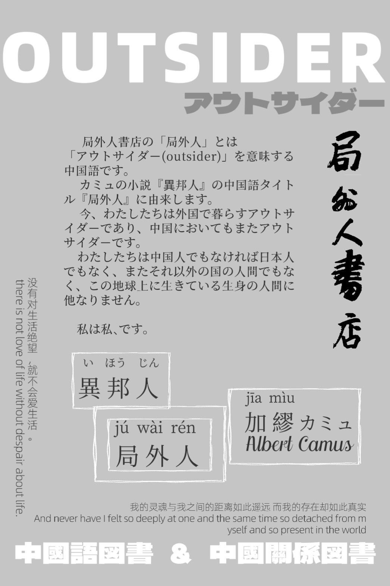

局外人書店
/ 局外人書店
トップ
/ 首頁
局外人書店とは
/ 關於局外人書店
理念
/ 理念
SNS
/ 社群
交通
/ 交通資訊
お問い合わせ
/ 聯絡我們
営業内容
/ 服務內容
書店
/ 書店
公共図書館
/ 公共圖書館
会員制度
/ 會員制度
日本語教室
/ 日語課
出版
/ 出版
イベント
/ 活動
定期イベント
/ 定期活動
卓球
/ 乒乓球
日中交流会
/ 中日交流會
不定期イベント
/ 不定期活動
局外談（講演会）
/ 局外談
君読（公開討論会）
/ 君讀
青雲講堂（青年向けシリーズ講義）
/ 青雲講堂
展示
/ 展覽
親子イベント
/ 親子活動
局外人書店とは
/ 關於局外人書店

SNS
/ 社群
Twitter
Instagram
YouTube
交通
/ 交通資訊
〒101-0051
東京都千代田区神田神保町１丁目３７−４
203号室 書店
204号室 図書館
地図を見る
お問い合わせ
/ 聯絡我們
Mail
WeChat: juwairenshudian